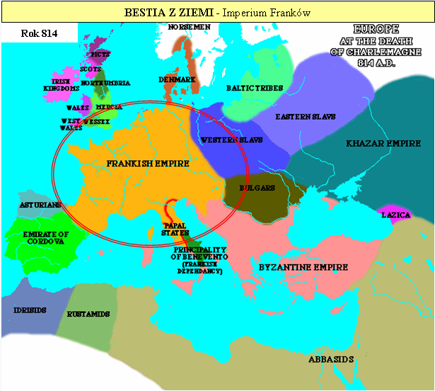
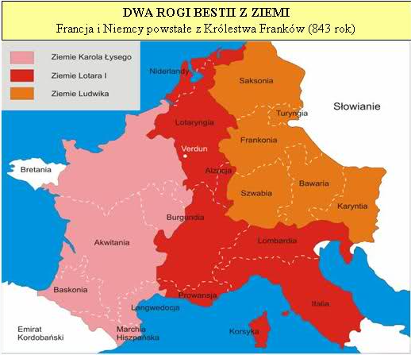
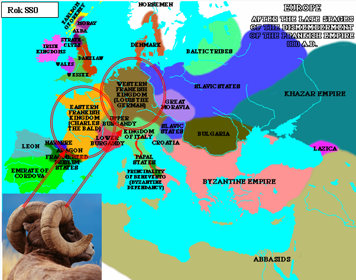

Rozdział 13 (cz.2)
CZĘŚĆ 2, ciąg dalszy Rozdziału 13
„Mały Róg”.
Prorok Daniel również ukazuje Bestię z 13 rozdziału księgi Objawienia pod symbolem „Małego Rogu”, który podaje się za moc Bożą, lecz naucza ludzkich tradycji, dokonuje zmiany w czasie wyznaczonym w Prawie Bożym i odwraca uwagę ludzi od prawdy, kierując ją na własną, ziemską liturgię.
Przyjrzyjmy się charakterystyce tej mocy, o której piszą Daniel, Paweł i Jan.
„I będzie mówił zuchwałe słowa przeciwko Najwyższemu” (Daniela 7:25).
„objawi się człowiek niegodziwości, syn zatracenia, (4) przeciwnik, który wynosi się ponad wszystko, co się zwie Bogiem lub jest przedmiotem boskiej czci, a nawet zasiądzie w świątyni Bożej, podając się za Boga.” (2 Tesaloniczan 2:3-4).
„a na głowach jego bluźniercze imiona. (5) I dano mu paszczę mówiącą rzeczy wyniosłe i bluźniercze (6) I otworzyło paszczę swoją, by bluźnić przeciwko Bogu, bluźnić przeciwko imieniu jego i przybytkowi jego, przeciwko tym, którzy mieszkają w niebie.” (13:1, 5, 6).
Nie sposób się nie zorientować i to bez żadnych wątpliwości, o kogo chodzi…
„A na głowach jego bluźniercze imiona”, to oczywiście aluzja do papieskich tytułów, na przykład:
- „Ojciec Święty”,
- „Namiestnik Chrystusa”,
- „Najwyższy Kapłan (Pontifex Maximus)”,
- „Zastępca Boga (Vicarius Dei)”,
- „Zastępca Syna Bożego (Vicarius Filii Dei)”,
- „Pan Bóg na ziemi (Dominus Deus noster papa)”,
- koronowaniu papieża potrójną koroną (tiarą) jako króla nieba, ziemi i podziemia.
Słowo ANTYCHRYST (grecki: Antichristo), znaczy „TEN, KTÓRY STAWIA SIĘ W MIEJSCE CHRYSTUSA”!
Takie znaczenie ma również oficjalny papieski tytuł „Vicarius Filii Dei”.
Ujawnia to strategię szatana, która polega na stawianiu siebie w miejscu Chrystusa, aby skuteczniej walczyć przeciwko Niemu.
Jednym ze znamion antychrysta są jego imiona, kolejnym liczne świadome oszustwa doktrynalne i błędne dogmaty wiary katolickiej, rażąco sprzeczne z Biblią, czego najjaskrawszym przykładem jest wiara w trzech bogów, zmiana przykazań Bożych, składanie "Chrystusa w ofierze" oraz przyjęcie wierzeń pogańskiego pochodzenia (kult Marii, świętych, ich relikwii, posągów i obrazów, nieśmiertelnej duszy, czyśćca i piekła). Lista jest naprawdę długa…
Posłuchajmy tylko kilku bluźnierstw wydobywających się z „paszczy” zwierzęcia/małego rogu/syna zatracenia:
1. „Na tej ziemi zajmujemy miejsce Boga Wszechmocnego”. (Encyklika z 20 czerwca 1894, wypowiedź Leona XIII).
2. „Ty jesteś pasterzem, ty jesteś lekarzem, ty jesteś spowiednikiem, ty jesteś zarządcą i wreszcie ty jesteś innym Bogiem na ziemi”. (Ch. Marcellus, mowa na Soborze Laterańskim sesja IV (1512) w Mansi SC, tom 32, kolekcja 761).
3. „Papież jest nie tylko reprezentantem Jezusa Chrystusa, ale samym Jezusem Chrystusem, ukrytym za zasłoną ciała.” (The Catholic National, lipiec 1895).
4. „Ponadto ogłaszamy, stwierdzamy, definiujemy i mówimy każdej ludzkiej istocie, że dla ich zbawienia konieczne jest całkowite poddanie kapłanowi rzymskiemu (Pontifex Romanum)”. (Bulla Unam Sanctam, papież Bonifacy VIII).
5. Z podobnym stanowiskiem, jak wyżej, spotykamy się później w deklaracji Dominus Iesus z 2000 roku, kiedy kardynał Josef Ratzinger był jeszcze prefektem Kongregacji Nauki Wiary.
Jak widać filozofia papieża Benedykta XVI wcale nie różni się od tej z czasów średniowiecza.
6. Przypisywanie sobie pozycji najwyższego i nieomylnego nauczyciela z oświadczeniem: „Kościół rzymski nigdy nie pobłądził i po wszystkie czasy (…) w żaden błąd nie popadnie” (papież Grzegorz VII, bulla Dictatus Papae).
7. W roku 1870 ogłoszono dogmat o „nieomylności papieża”, choć Bóg mówi, że „nie ma człowieka, który by nie zgrzeszył” (1 Królewska 8:46) oraz, że „Przeklęty mąż, który na człowieku polega i z ciała czyni swoje oparcie, a od Pana odwraca się jego serce!” (Jeremiasza 17:5).
8. Papież Klemens XI w 1717 roku, nazwał Nowy Testament Pisma Świętego „szerzącą się zarazą” !!!
9. „Patrzcie, co bajka o Jezusie Chrystusie dla nas zrobiła”. (Papież Leon X).
W jakim momencie zaczyna „bluźnić przeciwko imieniu jego i przybytkowi jego”?
Utrata znaczenia kapłaństwa świątynnego oraz świątyni starotestamentowej nastąpiła z chwilą śmierci Jehoszua „Wtedy zasłona świątyni rozdarła się na dwoje, od góry aż do dołu.” (Marka 15:38).
Od tego momentu symbol został spełniony. Chrystus staje się jedynym Arcykapłanem. „Jej to trzymamy się, jako kotwicy duszy, pewnej i mocnej, sięgającej aż poza zasłonę, (20) gdzie, jako poprzednik wszedł za nas Jezus, stawszy się arcykapłanem według porządku Melchisedeka na wieki.(26) Takiego to przystało nam mieć arcykapłana, świętego, niewinnego, nieskalanego, odłączonego od grzeszników i wywyższonego nad niebiosa; (27) który nie musi codziennie, jak inni arcykapłani, składać ofiar najpierw za własne grzechy, następnie za grzechy ludu; uczynił to, bowiem raz na zawsze, gdy ofiarował samego siebie.” (Hebrajczyków 6:19, 7:26-27).
A zatem, w jakich okolicznościach „chrześcijaństwo” zaczyna bluźnić przeciwko przybytkowi?
„Gdyby zaś doskonałość była osiągalna przez kapłaństwo lewickie, a wszak w oparciu o nie otrzymał lud zakon, to, jaka jeszcze była potrzeba ustanawiać innego kapłana według porządku Melchisedeka, zamiast pozostać przy porządku Aarona?” (Hebrajczyków 7:11).
Niewątpliwie jest to moment, w którym przywraca się już nieobowiązujące kapłaństwo na ziemi i służbę ofiarniczą w postaci mszy, w której kapłan bluźni, twierdząc, że ma władzę w momencie ofiary mszalnej nawet nad Bogiem, wówczas rodzi ponownie Jehoszua, a następnie ofiaruje go na ołtarzu. Chrystus w ten sposób jest poniżony, zlekceważony, gdyż odrzuca się Jego jedną, w pełni wystarczającą i niepowtarzalną ofiarę z Golgoty, a w to miejsce wprowadza się własną ofiarę - mszalną.
W 787 roku na Soborze Nicejskim dochodzi do przyjęcia twierdzenia, że chleb i wino używane do Wieczerzy Pańskiej ulega przeistoczeniu. Oto, jak śmiało bluźnią:
„sam Bóg posłuszny wypowiedzianym przez kapłanów słowom Hoc est corpus meum (To jest ciało moje) — zstępuje na ołtarz, przychodzi, gdzie go zawołają, ilekroć go zawołają, oddając się w ich ręce, choćby byli jego nieprzyjaciółmi. Gdy już przyjdzie, pozostaje całkowicie w ich gestii; przesuwają Go z miejsca na miejsce, jak im się podoba, mogą też, jeśli sobie życzą, zamknąć Go w tabernakulum, zostawić na ołtarzu lub usunąć na zewnątrz kościoła, mogą też, jeśli tak postanowią, spożyć Jego ciało lub podać innym, jako pokarm”. (Podręcznik dla duchownych katolickich, autorstwa kardynała Alfonsa de Ligurio).
Mało tego:
„Otrzymaliście w tej chwili straszliwą (!) władzę. To jest władza nie tylko nad szatanami, nie tylko nad znakami sakramentalnymi, ale przede wszystkim - nad samym Bogiem! Jesteście przecież „spirituales imperatores”, a jako tacy, macie władzę rozkazywać nawet samemu Bogu. On tego zapragnął, on tego od was chciał! Będziecie Mu rozkazywać, gdy na wasze słowa, zstępować będzie na ołtarze - Bóg żywy, choć zakryty, lecz prawdziwy (…) Kto na Was patrzy, widzi w Was Boga. Kto do Was się zbliża, nie szuka ludzkiego, ale Bożego. Prawdziwie: Sacerdos, alter Christus! Kapłan jest drugim Chrystusem” (Ateneum Kapłańskie, Zeszyt 2, IX-X 1960 r.).
W 1 liście do Tymoteusza 2:5, czytamy: „Albowiem jeden jest Bóg, jeden też pośrednik między Bogiem a ludźmi, człowiek Chrystus Jezus”.
Zobaczmy, jaki błąd popełniali wcześniej Izraelici, kiedy jeszcze ludzkie kapłaństwo było cieniem zapowiadającym Chrystusa, jako Jedynego Arcykapłana:
„Czy nie wypędziliście kapłanów Pana, potomków Aarona, i Lewitów, i nie narobiliście sobie kapłanów jak ludy innych krajów, gdzie to każdy, kto przychodzi z młodym cielcem i z siedmioma baranami, aby go wyświęcono, zostaje kapłanem tych, którzy nie są bogami!” (2 Królewska 13:9).
Obecnie nie dość, że tamta historia się powtarza, to mało tego, Jednego kapłana i pośrednika fałszywe kościoły zastąpiły wieloma kapłanami, którzy wbrew naukom Pisma Świętego rozgrzeszają, spowiadają, szastają imieniem Boga, wybaczają grzechy, a na dodatek "symbolicznie", choć twierdzą, że rzeczywiście i faktycznie - mordują Syna Bożego - BLUŹNIĄ BOGU I ZWODZĄ LUDZI!
Uzurpują sobie moc i władzę należące wyłącznie do Boga.
„Najwyższą mocą kapłańskiej pozycji jest moc poświęcenia. Nie ma większego aktu ponad poświęcenie ciała Chrystusa. Jest to najważniejsza faza świętej służby, moc kapłana nieprzewyższana przez biskupów, arcybiskupów, kardynałów czy Papieża. W rzeczywistości jest równa mocy Jezusa Chrystusa. Taka jest rola księdza, aby przemawiać głosem oraz autorytetem samego Boga”.
„Kiedy kapłan ogłasza wzniosłe słowa poświęcenia, sięga on do nieba, przynosi Chrystusa na ziemię wprost z Jego tronu oraz umieszcza Go na ołtarzu aby Go ofiarować ponownie jako Ofiarę za grzechy ludzkie. Ta moc przewyższa moc króli, monarchów; jest większa od mocy świętych i aniołów, większa od mocy Serafinów i Cherubinów. Rzeczywiście, moc ta jest większa od mocy Marii Dziewicy: na krótką chwilę Błogosławiona Dziewica była ludzkim istnieniem, przez które Chrystus się nam ujawnił, w każdym pojedynczym przypadku kapłan przynosi Chrystusa z Nieba na ziemię, oraz prezentuje Go jako wieczną Ofiarę za grzechy człowieka - nie jedynie raz, ale tysiące razy! Kiedy kapłan mówi, Chrystus wieczny i wszechmocny Bóg schyla Swoją głowę w pokornym posłuszeństwie do kapłańskiego nakazu.” (katolicki teolog, Ojciec John’a O’Brian, z jego książki, „Wiara dla milionów”).
To jest właśnie serce i dusza OKULTYZMU i MAGII. To jest jawna służba w pałacach szatana…
„Lecz gdy On złożył raz na zawsze ofiarę jedną za grzechy. Usiadł po prawicy Bożej. Albowiem jedną ofiarą uczynił na zawsze doskonałymi tych, którzy są uświęceni” (Hebrajczyków 10:12, 14).
ODDAŁ SWE ŻYCIE JEDEN RAZ, NIE PO TO, ABY POWTARZAĆ SWOJE CIERPIENIA WIELOKROTNIE!
Natomiast diabeł posługując się swymi sługami rozkoszuje się wyobrażając sobie, że MORDUJE Syna Bożego TYSIĄCE RAZY DZIENNIE. Udało mu się przekonać do czynienia tego miliony, miliony ludzi…
Lecz ja wiem, że mój Pan – Syn Boga Jedynego JUŻ NIE UMIERA, NIE CIERPI, NIKT NIE MA NAD NIM WŁADZY (poza Bogiem Ojcem) – Mój Pan żyje i panuje, jako Król królów, siedząc po prawicy Swojego Boga i Ojca, „wiedząc, że zmartwychwzbudzony Chrystus już nie umiera, śmierć nad nim już nie panuje.” (Rzymian 6:9).
„Będzie zamyślał odmienić czasy i zakon”. (Daniela 7:25).
Około 530 roku Dionizy Mały, mnich ze Scytii, na polecenie Papieża Jana I, obliczył datę narodzin Chrystusa i zaproponował nowe odliczanie czasu. Dziś wiadomo, że obliczył ją błędnie - pomylił się o 5 lat.
Nie to jest najważniejsze, lecz kolejna bardzo precyzyjna wskazówka od Boga, pozwalająca bez jakichkolwiek wątpliwości zidentyfikować „Mały róg”, czyli PAPIESTWO!
„Teolog i mnich, który na polecenie papieża Jana I obliczył, że Chrystus urodził się 25 grudnia roku 753 od założenia Rzymu. Od roku następującego po tej dacie (rok 1 n.e.) zaczął liczyć erę chrześcijańską, od jego imienia zwaną także erą dionizyjską. Papież Jan I wprowadził ten nowy sposób datowania, oparty na początku ery chrześcijaństwa.” (Wikipedia).
Kolejny przykład to fakt zmiany kalendarza juliańskiego na gregoriański, bullą papieską (Inter gravissimas) wydaną przez papieża Grzegorza XIII (łac. Gregorius XIII – stąd nazwa kalendarza) w 1582 roku, który stanowił kontynuację zwyczajów starożytnego Rzymu. W państwie rzymskim kalendarzem opiekował się najwyższy kapłan – Pontifex Maximus, kiedy wprowadzono kalendarz juliański (45 rok– Juliusz Cezar), następnie tytulaturę tę (Pontifex Maximus) przejęli papieże.
Co do zmiany zakonu – przykazań Bożych, przez papiestwo, to chyba nie trzeba ich wymieniać, gdyż zajęłoby to kilka stron, natomiast wierzę, że nikt, kto choć „liznął” Słowo Boże i jest zdrowy na umyśle (w aspekcie duchowym) nie będzie miał, co do tego wątpliwości? Najjaskrawszym dowodem i największą zbrodnią jest zmiana najważniejszego przykazania:
„Które przykazanie jest pierwsze ze wszystkich? (29) Jezus odpowiedział: Pierwsze przykazanie jest to: Słuchaj, Izraelu! Pan, Bóg nasz, Pan jeden jest.” (Marka 12:28-29).
JEDEN, A NIE TRZECH!!!
Innym bezprecedensowym dowodem odstępstwa jest wręcz oszałamiające bałwochwalstwo, nigdy wcześniej niespotykane na taką skalę…
„Nie postawisz też sobie pomnika, którego Pan, Bóg twój nienawidzi.” (5 Mojżesza 16:21).
„Wysypują złoto z worka, a srebro ważą na szalach, wynajmują złotnika, aby z tego zrobił bożka, przed którym się pochylają i któremu pokłon oddają. (7) Biorą go na ramiona, noszą go i stawiają na swoim miejscu, gdzie stoi i skąd się nie rusza, a gdy się woła do niego, nie odpowiada, nikogo nie może wyrwać z jego niedoli. (8) Pamiętajcie o tym i przyznajcie się do winy, weźcie to do serca, wy odstępcy! (Izajasza 46:6-8).
Wszystko to jest dowodem odstępstwa kościoła rzymskiego od wiary, która raz na zawsze została przekazana świętym” (Judy 1:3).
Gdy papieże twierdzą, że do zbawienia niezbędne są sakramenty, których podstawą jest głównie Tradycja Kościoła, Jehoszua głosił coś zupełnie odwrotnego. Stwierdził:
„Daremnie mi jednak cześć oddają, głosząc nauki, które są nakazami ludzkimi.” (Mateusza 15:9, por. Marka 7:7–9).
Podobne stanowisko zajął później apostoł Paweł, który jednoznacznie potępił ludzkie tradycje (por. Galacjan 1:6–9; Kolosan 2:8), oraz apostoł Piotr, który przestrzegał przed fałszywymi nauczycielami, bo ci – jak pisał – „wprowadzać będą zgubne nauki i zapierać się Pana, który ich odkupił, sprowadzając na się rychłą zgubę.” (2 Piotra 2:1), co w najbardziej rażący sposób urzeczywistniło się w doktrynie Kościoła rzymskiego.
Dogmaty i Tradycja tego Kościoła są, bowiem zaprzeczeniem nauki apostolskiej, która głosi, że „Wiara tedy jest ze słuchania, a słuchanie przez Słowo Chrystusowe.” (Rzymian 10:17).
„Będzie inny niż poprzedni”. (Daniela 7:25).
Papiestwo było różne od innych potęg. Papiestwo było potęgą o charakterze polityczno – religijnym. Sprawowało władzę nie tylko nad kościołem, ale także rozkazywało świeckim władzom państwowym i królom. Papieże rościli sobie prawo do ustanawiania i zrzucania z tronu władców oraz do nieomylności.
„będzie męczył Świętych Najwyższego”. (Daniela 7:25).
„I dozwolono mu wszcząć walkę ze świętymi i zwyciężać ich; dano mu też władzę nad wszystkimi plemionami i ludami, i językami, i narodami”. (13:7).
Prześladował lud Boży oraz ludzkość głównie podczas „ciemnych wieków średniowiecza”.
Chociaż historycy nie uzyskali zgodności do liczby ofiar, to prawdopodobnie znacznie zaniżone szacunki wskazują na 50/60 milionów ludzi, którzy stracili życie z polecenia papiestwa, w samej tylko Europie. Papiestwo prześladowało i niszczyło. Jest to zbyt obszerny temat, aby opisać, to, co wyczyniali.
„będą wydani w jego moc aż do czasu i dwóch czasów i pół czasu”. (Daniela 7:25).
„dano mu też moc działania przez czterdzieści i dwa miesiące.” (13:5).
Jego dominacja nad nimi, i szczególna władza polityczno – religijna miała trwać przez 1260 lat (533-1793 / 538-1798).
Okres ten zwany jest: „czas, czasy, i pół czasu” (Objawienie 12:14, Daniela 7:25, 12:7), „42 miesiące” (Objawienie 11:2, 13:5), „1260 dni” (Objawienie 11:3, 12:6).
Myślę, że Bóg objawił nam w swoim Słowie, czym jest moc nieprawości i jaki jest okres jej szczególnej działalności wielokrotnie na różne sposoby, aby nie było wątpliwości. (Zobacz opracowanie do rozdziału 11).
Papiestwo otrzymało władzę z rozkazu cesarza Justyniana w 533 roku (tzw. Kodeks Justyniana wszedł w życie w 538), na mocy, którego uznał biskupa Rzymu za zwierzchnika wszystkich kościołów. Usunięcie Ostrogotów z Rzymu w 538 roku przez wojska bizantyjskie (Justynian I) pod wodzą Belizariusza umożliwiło w pełni korzystanie z tych uprawnień i od tego roku rozpoczęła się supremacja papieska. Z kolei w 1793 roku, a więc w 1260 lat po edykcie Justyniana, we Francji, która była potężnym sojusznikiem papiestwa - pierwszą córą kościoła - ukazał się dekret wymierzony w obalenie unii kościoła i państwa, kładący kres politycznemu autorytetowi papiestwa.
W 1798 roku poszedł za nim decydujący cios świeckiego miecza wymierzony w papiestwo, który oznaczał koniec teokratycznej epoki rozpoczętej dokładnie 1260 lat wcześniej:
„15 lutego 1798 roku, Francja podjęła interwencję zbrojną. Generał Berthier zajął Rzym, pozbawiając papieża władzy świeckiej” (Mathieu-Rosay).
Mamy, więc historycznie potwierdzone bardzo dokładnie dwa okresy 1260 lat, tak abyśmy mieli jasne świadectwo i nie mieli wątpliwości, o jaki okres chodzi w Słowie Bożym:
533 (dekret) – 1793 (dekret).
538 (władza) – 1798 (koniec władzy).
W historii świata znajdziemy tylko jedną instytucję odpowiadającą wszystkim wymienionym w Biblii cechom antychrysta, dlatego nie ma żadnych wątpliwości, o jaka instytucje chodzi.
„I widziałem inne zwierzę, wychodzące z ziemi, które miało dwa rogi podobne do baranich, i mówiło jak smok. (12) A wykonuje ono wszelką władzę pierwszego zwierzęcia na jego oczach. Ono to sprawia, że ziemia i jej mieszkańcy oddają pokłon pierwszemu zwierzęciu, którego śmiertelna rana była wygojona. (13) I czyni wielkie cuda, tak, że i ogień z nieba spuszcza na ziemię na oczach ludzi.” (Objawienie 13:11-13).
„Bestia z ziemi”.
Bestia z morza, czyli papiestwo, jako Imperium rzymsko-katolickie wraz ze swoimi roszczeniami nie miałoby siły, gdyby nie „Bestia z ziemi”, symbolizująca ówczesną europejską potęgę, która oddała w ręce papiestwa swoje polityczne, ekonomiczne i militarne siły!
W VIII wieku biskupi Rzymu zostają narażeni na atak Longobardów, jednego z plemion germańskich, którzy chcą rozszerzyć stan swojego posiadania w Italii. Osłabione w walkach z Persją i Arabami Bizancjum nie jest w stanie udzielić pomocy Rzymowi. Biskupi Rzymu mają także pretensję do cesarzy bizantyjskich o obrazoburstwo, namiętne niszczenie świętych wizerunków. Jedynym, więc wybawicielem, w kierunku, którego zwrócą się oczy papieży będzie Pepin Mały, a następnie Karol Wielki – władcy państwa Franków, czyli naszej „Bestii z Ziemi”.
W 754 roku Pepin Mały, przekonany przez papieża, podjął decyzję o ataku na Longobardów.
Podczas dwukrotnej wyprawy do Italii w 754 i 755 roku Pepin osiągnął swój cel.
W 756 roku powstało terytorialne „Państwo Kościelne” obejmujące egzarchat Rawenny, księstwo Rzymu i Pentapolis.
„Bestia z Morza” – papiestwo, posługiwało się szczególnie efektywnie tą drugą bestią – „Bestią z Ziemi”, która symbolizuje (pierwotnie) państwo franków.

„Dwa rogi”.
Co oznaczają dwa rogi znajdujemy zapisane u proroka Daniela, gdzie czytamy o niemalże analogicznej sytuacji do omawianej:
„Baran z dwoma rogami, którego widziałeś, oznacza królów Medii i Persji.” (Daniela 8:20).
Frankowie, słusznie kojarzeni z Francuzami i Francją, w latach 843 oraz 870 (traktaty w Verdum i w Mersen) dali początek dwom państwom:
- Zachodnio Frankońskiemu (Francja)
- Wschodnio- Frankońskiemu (Germania - królestwo niemieckie).
Na mocy Traktatu w Verdun zawartego w 843 roku państwo Karola Wielkiego podzielono między synów Ludwika I Pobożnego:
- Lotara,
- Karola Łysego,
- Ludwika Niemieckiego.
Podział ten położył podwaliny pod powstanie w przyszłości Francji i Niemiec.
„Zwierze” wyłania się z ziemi, a nie z morza, gdyż powstaje na solidnym gruncie istniejącego od długiego już czasu – jednego, a nie wielu – państwa, narodu Franków.

Bestii wyrosły „dwa rogi”, czyli Francja i Niemcy, które wyrosły/powstały z królestwa franków (843 rok), podobnie jak dziesięć rogów (królestw), które powstały z upadku Imperium Zachodnio-Rzymskiego w 476 roku.

Apogeum potęgi osiągnęło państwo Karolingów za panowania Karola Wielkiego (768-814 rok). To od jego imienia pochodzi tytuł monarszy w językach słowiańskich – król. Karol, władca o niespożytej energii:
- krwawo chrystianizował germańskich Sasów, opierając granice państwa na Łabie,
- rozbił potężne królestwo Longobardów w Italii,
- wyparł Arabów w Hiszpanii aż po Ebro,
- rozbił państwo koczowniczych Awarów nad środkowym Dunajem.
OGNIEM i MIECZEM nawracali i podporządkowywali wszystkich kościołowi rzymskokatolickiemu.
„Karol Wielki podboje swe argumentował chęcią rozprzestrzeniania wiary.Jego rozumienie władzy królewskiej i powinności władcy w stosunku do Kościoła spowodowało znaczne zacieśnienie więzów łączących państwo i Kościół. Karol Wielki za swój obowiązek uważał walkę z poganami i niewiernymi, a także umacnianie wiary chrześcijańskiej.” – czytaj KATOLICKIEJ!
„Karol za cel istnienia cesarstwa uważał: umocnienie chrześcijaństwa. Karol Wielki skupiał pod swoją władzą prawie wszystkie państwa uznające zwierzchność papieża. Cesarz uważany był za władcę całego świata chrześcijańskiego za obrońcę i opiekuna kościoła. Koronacja symbolicznie połączyła elementy rzymskie, chrześcijańskie i barbarzyńskie. Cesarstwo miało jednak bardziej europejski charakter od swojego pierwowzoru. Pozostała po nim idea zjednoczonego świata zachodniego. Dlatego też niektórzy nazywają Karola Wielkiego ojcem Europy”. (Historia powszechna VIII/IX wiek).
„W papieskim Rzymie powstała jednak inna koncepcja. Chciano wskrzesić jedynie dawne cesarstwo rzymskie na Zachodzie. Było to bardziej w interesie papiestwa. Państwo Karola Wielkiego obejmowało większość terytorium chrześcijaństwa zachodniego, któremu przewodził papież. Odrodzone cesarstwo przydałoby blasku Rzymowi.Leon III miał również nadzieję, że koronując Karola Wielkiego zyska silnego opiekuna. Papieska interpretacja nakładała na cesarza obowiązek ochrony papieża. Kronikarz papieski pisał, że „wielką miłością darzy on kościół rzymski i jego namiestnika, którego obiecał bronić.” (Historia powszechna VIII/IX wiek).
„Dwa rogi podobne do baranich” - zwróćmy uwagę na słowo PODOBNE. Rogi były tylko podobne do tych, które posiada niewinny Baranek: „I ujrzawszy Jezusa przechodzącego, rzekł: Oto Baranek Boży.” (Jana 1:36), „Baranka, …który miał siedem rogów” (Objawienie 5:6), gdyż prawdziwym ojcem „zwierzęcia” był diabeł, dlatego też zwierze „mówiło jak smok”.
„Ci są jednej myśli, i oddadzą moc i władzę swoją zwierzęciu. (14) Będą oni walczyć z Barankiem, lecz Baranek zwycięży ich, bo jest Panem panów i Królem królów” (Objawienie 17:13-14).
Czytajmy, zatem:
„Czasy Karola Wielkiego, charakteryzowało przekonanie, że Frankowie (jak dawniej Rzymianie) są powołani do sprawowania władzy, przewodzenia innym chrześcijanom, strzeżenia ich prawowierności, szerzenia wiary i do obrony chrześcijaństwa przed wszelkimi innowiercami. Frankowie stworzyli jedno z najbardziej potężnych państw Europy.Dumni z ekspansji Karola Wielkiego, wierzyli w swoje specjalne powołanie i boską pomoc.Wzrastał jego autorytet, co było głównie zasługą papieża, błogosławiącego jego „słusznym” wojnom o chrystianizację pogan, czy przeciwko innowiercom.”(Historia powszechna VIII/IX wiek).
Czy potrzebny jest komentarz?
„A wykonuje ono wszelką władzę pierwszego zwierzęcia na jego oczach.”
Sukcesy Karola Wielkiego przyniosły mu koronę cesarza rzymskiego – obrońcy wiary KATOLICKIEJ (800 rok), jednakże „władzę nadrzędną w stosunku do cesarza miał papież. Przewaga militarna króla Franków nie podlegała dyskusji. Ale dysponentem korony cesarskiej był papież.” (Historia powszechna VIII/IX wiek).
Przyjęcie korony z rąk papieża oznaczało, że to on jest dysponentem godności cesarskiej i on decyduje o obsadzie tronu cesarskiego.
Koronacja Karola Wielkiego ustanowiła wzór koronacji cesarskiej na kolejne stulecia. Od tej pory (z małymi przerwami) każdy, kto chciał osiągnąć godność cesarską musiał udać się do Rzymu. Koronacja powiązana była nie tylko z miejscem, ale i z osobą papieża. Papiestwo, mimo, że aż do XI wieku zależne od cesarstwa, stało się władzą niezbędną do koronacji, co nadawało mu pozycję polityczną. Umocniony został sakralny charakter tego aktu. Koronacja nabrała znaczenia politycznego, prawnego i religijnego.
Przytoczmy jeden z przykładów władzy papieskiej, którzy choć nie mieli armii, to posiadali bardzo skuteczną broń – klątwę (ekskomunikę).
Doświadczył tego na przykład król niemiecki Henryk IV, gdy usiłował zdetronizować „fałszywego mnicha Hildebranda”, czyli papieża Grzegorza VII. Aby zdjąć klątwę papieską, Henryk musiał stać 3 dni i noce na mrozie i boso przed zamkiem w Canossie, prosząc papieża o wybaczenie (1077 rok).
Grzegorz VII opracował wcześniej program reformy kościoła (Dictatus papae) i ogłosił go w 1075 r. W programie tym zawarł on między innymi następujące postulaty:
- władza świecka, doczesna, którą posiada cesarz jest podporządkowana władzy kościelnej, duchowej,
- tylko w dyspozycji papieża znajdują się insygnia cesarskie- decyzje, które podejmuje papież są niepodważalne,
- papież ma prawo unieważnić postanowienia i decyzje cesarza- wszystkie państwa, stanowiąc prawo mają wypełniać przede wszystkim Boże prawo,
- duchowieństwo zostało wybrane przez Boga i stoi na straży Bożego prawa
Zobacz ciąg dalszy w części 3
https://mojabiblia.github.io/j/48.html
kopia strony: https://jehoszua.ddv.pl/readarticle.php?article_id=47 Wszelkie prawa autorskie należą się autorowi tej strony
zdbfa675c6az